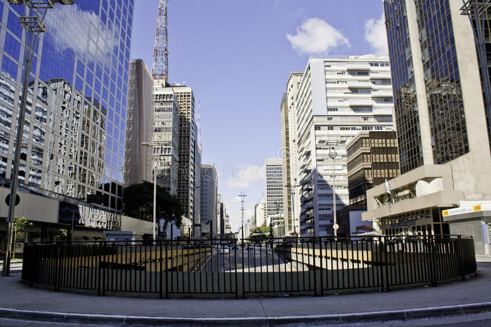

Passear na Avenida Paulista

Um dos principais centros financeiros da cidade, a avenida Paulista
também possui diversas opções de entretenimento. Endereço do Museu
de Arte de São Paulo, MASP, do Teatro Gazeta e muitos outros,
a região é de fácil acesso graças as diversas linhas de ônibus que
cruzam a avenida e a linha de metrô que passa por baixo dela.
A Avenida Paulista sempre é assunto. O que será que estão falando a
respeito no Twitter?
Os bares da Vila Madalena

Depois de um dia de trabalho, nada melhor do que um bom chopp, um
petisco e uma conversa em uma mesa de bar. Opções de sobra na região
das ruas Aspicuelta, Fradique Coutinho e Wisard.
Veja quais os melhores bares e restaurantes da região no
Guia da VEJA São Paulo.